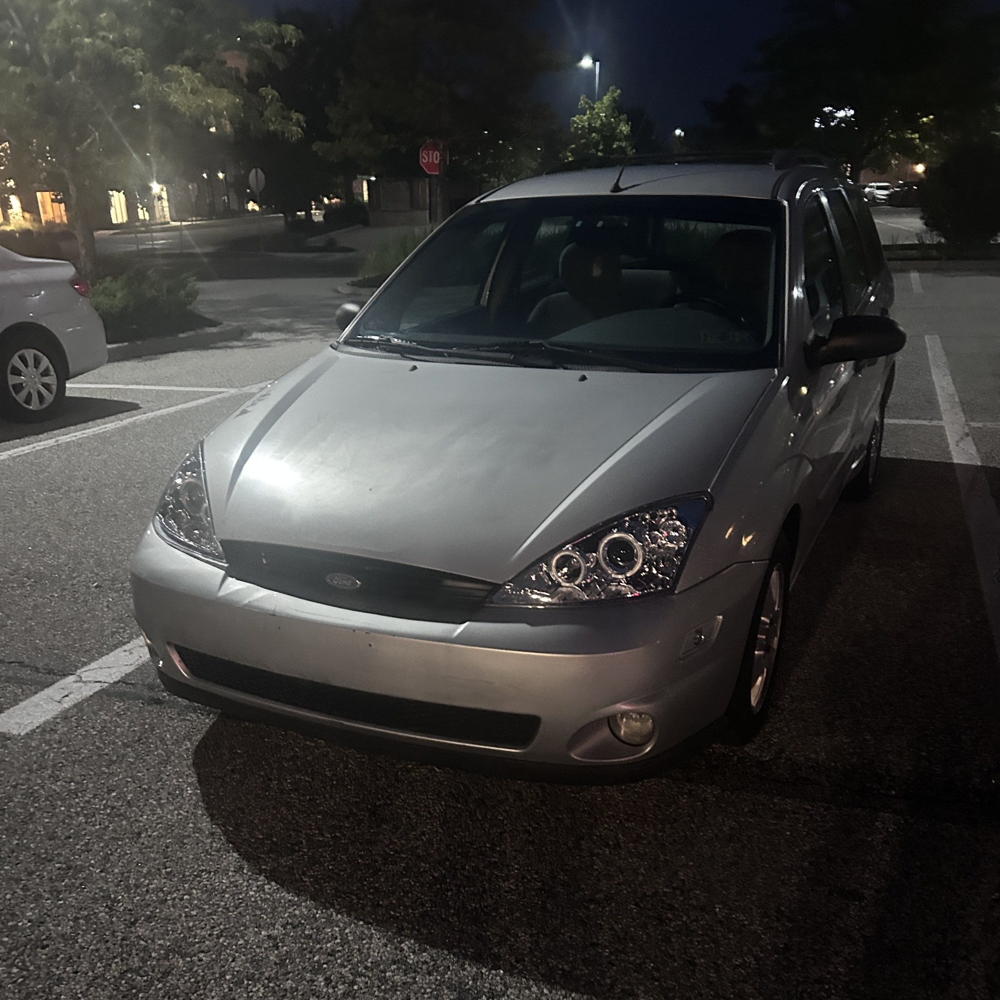
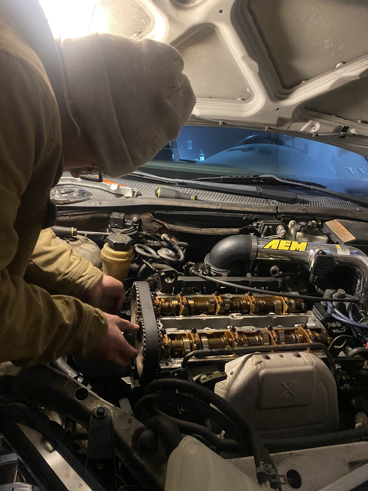
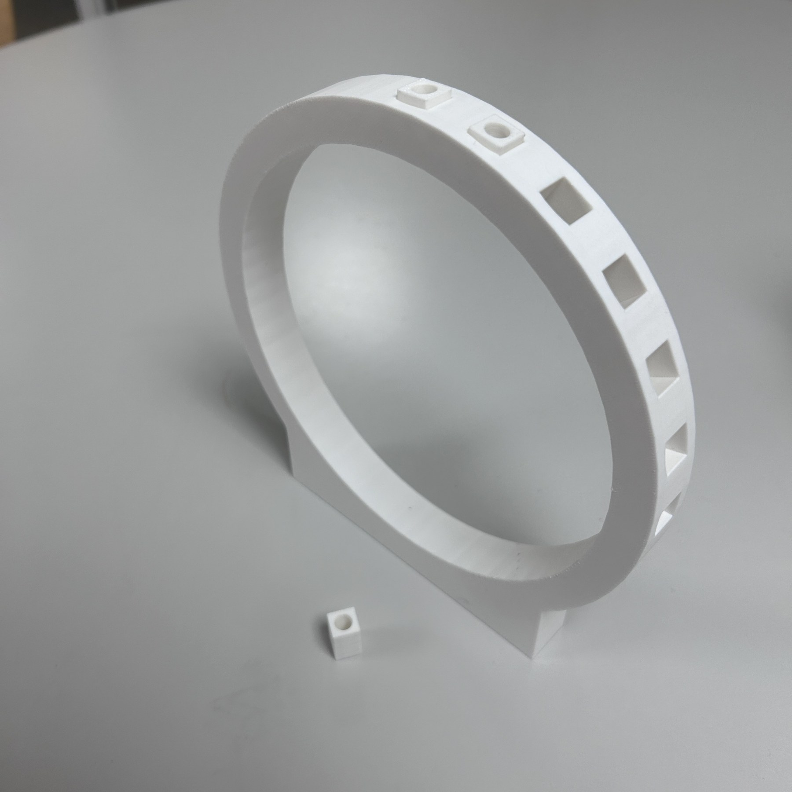
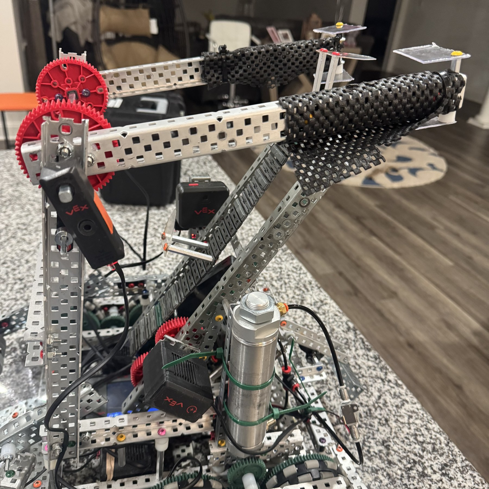
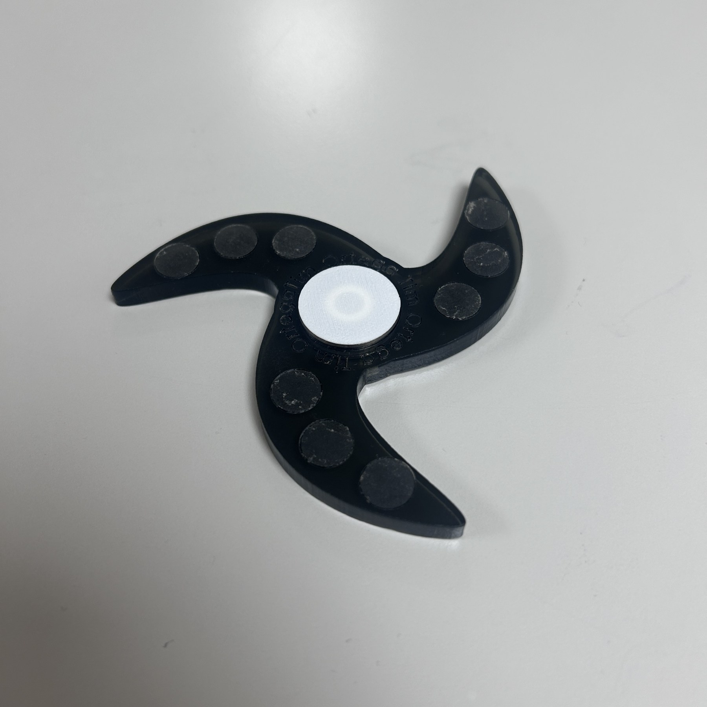
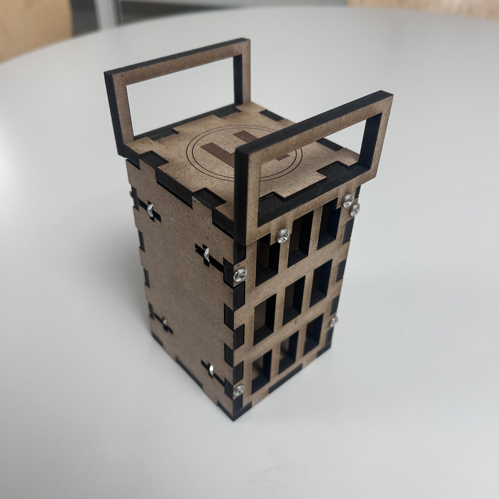
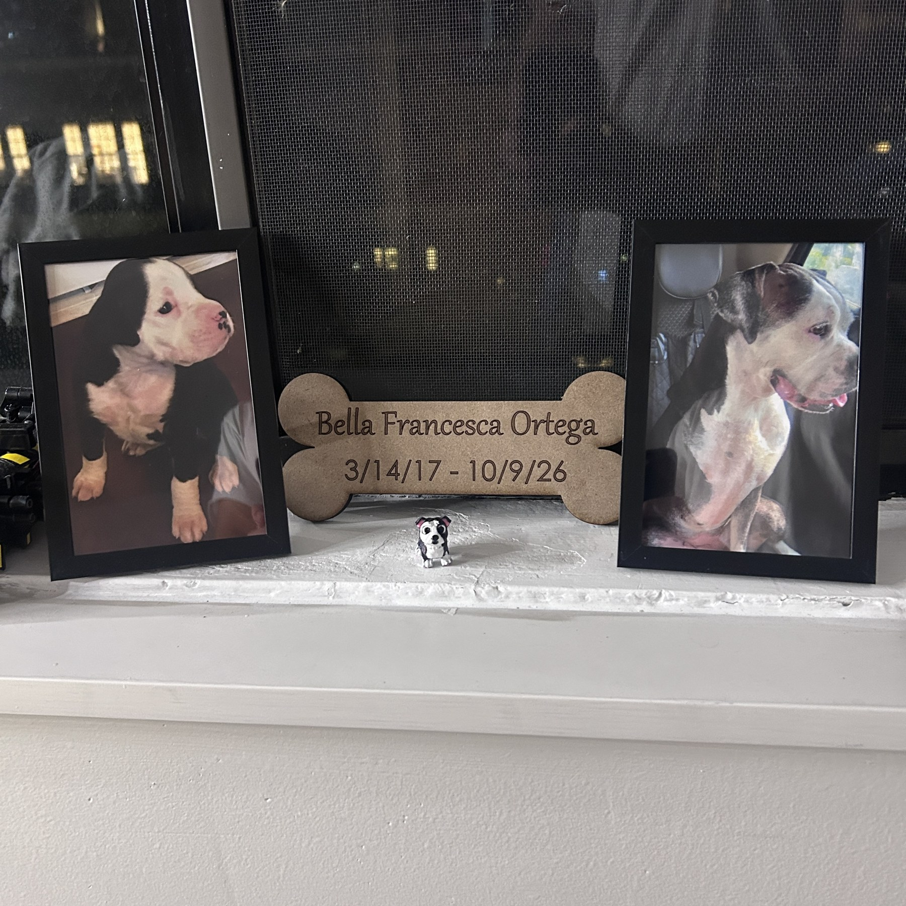

Automotive / Diagnostics
Ford Focus
A car I earned, a system I learned: timing-belt and water-pump work, plus tracing a vacuum leak to a ruptured diaphragm.
Explore projectFirst-year Mechanical Engineering and Applied Mechanics student at the University of Pennsylvania.

My work spans automotive maintenance and diagnosis, robotics, CAD, aerospace tooling, and fabrication.
The projects below document how I design, build, and troubleshoot physical systems.
Expected May 2030

A car I earned, a system I learned: timing-belt and water-pump work, plus tracing a vacuum leak to a ruptured diaphragm.
Explore project
A reusable jig and replaceable drill-contact insert for repeatable hole spacing in a fiberglass rocket airframe.
Explore project
Leading five engineers to integrate mechanisms, electronics, pneumatics, sensors, and C++ into a competition robot.
Explore projectSmaller builds, fabrication studies, and things made for a personal reason.

SolidWorks geometry brought to life with laser-cut acrylic, 3D-printed parts, and an off-the-shelf bearing.
Explore project
An assembly of laser-cut MDF, printed components, screws, and nuts built around intentional joint design.
Explore project
A laser-cut MDF keepsake designed to remember my dog Bella—a personal reason to make something carefully.
Explore projectAreas I’m interested in learning more about: the intersection of flight, autonomy, vehicle dynamics, and mechanical design.
Fall 2026–present
Collaborate with a PhD student studying tribofilm-forming zirconium dioxide (ZrO₂) nanocrystals in grease. Conduct friction and wear experiments using an MTM tribometer and inspect test surfaces to assess wear and lubricant performance.
High Power Rocketry Team · Sept 2026–present
Designed, fabricated, and tested a reusable drill jig for precise, repeatable mounting-hole spacing in a fiberglass rocket airframe.
Team Captain · Sept 2022–June 2026
Led five engineers across mechanical design, electronics, and software. Built a six-ring stacking mechanism and programmed autonomous routines in C++.
Line Cook, Expo, To-Go Facilitator · Dec 2024–June 2026
Coordinated multiple orders, worked flat-top and fryer stations, and supported guests during high-volume service.
Oct 2023–Nov 2024
Prepared food and delivered customer service in a fast-paced, team-based kitchen environment.
For engineering projects and opportunities, reach me by email or LinkedIn.